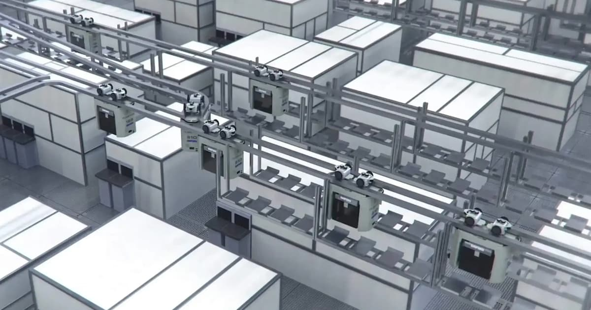

Phase 1 · Station 02
반도체 팹 AMHS — FOUP · 스토커 · 베이
Station 01이 "무엇이 나르는가"였다면, 이번에는 "무엇을, 어떤 공간에서, 어디에 쌓아 두며 나르는가"다. 운반 용기 FOUP, 팹의 공간 단위 베이, 반송의 완충 장치인 스토커와 버퍼 — 이들을 차량·레일·제어와 묶어 하나의 시스템으로 부르는 이름이 AMHS다.
AMHS — 반송에 관련된 모든 것의 총칭
AMHS(Automated Material Handling System, 자동 반송 시스템)는 특정 장비 하나의 이름이 아니다. 팹 안에서 자재를 자동으로 나르고, 보관하고, 건네주는 데 관련된 모든 것을 묶어 부르는 시스템 차원의 이름이다. 구성 요소를 펼쳐 보면 이 문서 전체의 목차가 된다.
- 반송 차량 — 천장 레일을 달리는 OHT 비히클 (Station 01에서 다뤘다).
- 궤도 — 팹 천장 전체를 덮는 레일망. 간선과 지선의 구조가 있다 (이 문서의 '베이' 절).
- 보관 설비 — 스토커와 레일 옆 버퍼. 반송의 완충 장치다 (이 문서의 '버퍼' 절).
- 접점 — 공정 장비의 로드포트(load port), 스토커의 입출고 포트. FOUP이 시스템 사이를 건너가는 지점이다.
- 제어 소프트웨어 — 어떤 FOUP을 언제 어디로 보낼지 지휘하는 반송 제어 시스템 (Station 03에서 다룬다).
팹이 반송을 사람 없이 100% 자동화한 이유의 절반은 Station 01에서 봤다 — 청정도, 무게, 24시간 운전, 추적성. 나머지 절반은 규모다. 수천 개의 로트가 동시에 팹 안을 흐르고, 각 로트는 완성까지 수백 번 이동한다. 이 흐름을 사람 손으로 조율하는 것은 애초에 불가능한 규모이고, 반송이 조금만 지연되어도 수백억 원짜리 공정 장비가 일감 없이 서 있게 된다. 그래서 AMHS의 성능 지표는 개별 차량의 속도가 아니라 시스템 전체의 반송 시간과 처리량이며, 이것이 팹의 생산성에 직결된다.
운반 단위: 웨이퍼 → 로트 → FOUP
AMHS가 나르는 것은 무엇인가. 낱장의 웨이퍼가 아니다. 단위의 사다리를 따라가 보자.
- 웨이퍼(wafer) — 지름 300mm 실리콘 원판. 제품의 원재료이자 최종 산출물의 몸체다.
- 로트(lot) — 생산 관리의 단위. 같은 공정 이력을 공유하며 함께 움직이는 웨이퍼 묶음으로, 통상 최대 25매를 한 로트로 관리한다.
- FOUP(Front Opening Unified Pod) — 로트를 물리적으로 담는 밀폐 운반 용기. 300mm 웨이퍼를 최대 25매 수납하며, AMHS가 실제로 집고 나르는 대상이다.
FOUP의 이름에 답이 들어 있다. 전면 개방(front opening) — 용기 앞면 전체가 도어인데, 이 도어는 사람 손으로 여는 것이 아니다. FOUP을 공정 장비의 로드포트에 올려놓으면 장비 쪽 개폐 장치가 도킹된 상태로 도어를 열고, 장비 내부의 로봇이 웨이퍼를 꺼내 간다. 즉 웨이퍼는 밀폐 용기에서 밀폐 장비로 직접 건너가며, 클린룸 공기에조차 직접 노출되는 시간을 최소화한다. 클린룸 전체의 청정도를 극한까지 올리는 대신, 웨이퍼 주변의 작은 공간만 극한으로 깨끗하게 유지하는 발상이다.
참고로 300mm 이전의 200mm 시대에는 SMIF(Standard Mechanical Interface) 포드라는 밀폐 용기가 같은 역할을 했고, 노광 공정에 쓰이는 레티클(reticle, 포토마스크)도 전용 밀폐 포드(레티클 포드)에 담겨 같은 천장 레일 위로 반송된다.
시뮬레이션 모델에서 이동하는 개체(entity)는 웨이퍼가 아니라 FOUP(=로트)이다. 웨이퍼 낱장은 장비 내부의 일이고, 반송 시스템의 세계에서는 FOUP이 최소 단위다. Phase 5의 미니 팹 시뮬레이터에서도 레일 위를 흐르는 데이터 객체는 FOUP 하나하나가 된다.
팹의 공간 구조: 베이
팹 클린룸의 바닥은 무질서하게 채워져 있지 않다. 비슷한 공정을 하는 장비들이 통로 양쪽으로 도열한 구역 단위로 조직되는데, 이 구역이 베이(bay)다. 노광 베이, 식각 베이, 세정 베이처럼 공정별로 묶이는 것이 전통적인 배치다. 반송 관점에서 베이는 두 종류의 이동을 정의한다.
- 인트라베이 반송(intrabay) — 같은 베이 안 장비 사이의 짧은 이동.
- 인터베이 반송(interbay) — 베이에서 다른 베이로 건너가는 간선 이동.
과거의 팹은 이 둘을 물리적으로 분리된 시스템으로 지었다. 팹을 관통하는 인터베이 간선 루프가 각 베이 입구의 스토커들을 연결하고, 베이마다 전용 인트라베이 루프가 따로 도는 구조다. 이 구조에서 로트가 베이를 건너가려면 — 인트라베이 차량이 스토커에 넣고, 인터베이 차량이 꺼내 목적지 베이의 스토커로 나르고, 그 베이의 인트라베이 차량이 다시 꺼내는 — 스토커를 환승역으로 쓰는 3단 릴레이가 필요했다. 현대의 팹은 레일을 하나로 잇는 통합(unified) 레일망 경향이 뚜렷하다. 비히클 한 대가 출발 장비의 로드포트에서 목적지 장비의 로드포트까지 스토커 환승 없이 직행할 수 있어, 건네주고 받는 단계가 사라진 만큼 반송 시간이 줄어든다.
자료마다 팹 반송 그림이 다르게 그려져 있는 이유가 이것이다. 오래된 교과서와 논문은 스토커 중심의 분리형(인터베이/인트라베이 분리) 구조를, 최근의 팹 소개 자료는 통합 레일망을 그린다. 둘 다 맞다 — 세대가 다를 뿐이다. 그리고 물리적으로 통합된 팹에서도 "인터베이 이동/인트라베이 이동"이라는 용어는 여전히 쓰인다. 간선을 달리는 구간과 베이 안 지선을 도는 구간의 구분 자체는 사라지지 않기 때문이다.
위 평면도를 데이터로 옮기면 정확히 그래프가 된다. 노드(node)는 로드포트·버퍼 선반·분기/합류점이고, 엣지(edge)는 레일 구간(방향, 길이, 주행 속도를 속성으로 갖는다)이다. 반송이란 이 그래프 위에서 경로를 찾고 구간을 점유하며 이동하는 일이고, Phase 5 시뮬레이터의 첫 작업이 바로 이 웨이포인트 그래프를 데이터로 정의하는 것이다. 팹 레이아웃 도면은 곧 그래프 정의서다.
버퍼: 스토커와 사이드 트랙 버퍼
반송의 목적지는 결국 장비의 로드포트인데, 로드포트는 장비당 몇 개뿐이다. 다음 장비가 아직 앞선 로트를 처리 중이면 도착한 FOUP은 어딘가에서 기다려야 한다. 공정과 공정 사이에는 항상 대기 중인 재공품이 존재하므로, 팹은 완충 장치 없이는 돌아가지 않는다. AMHS는 두 계층의 버퍼로 이 문제를 푼다.
스토커 — FOUP 자동 보관 창고
스토커(stocker)는 FOUP 전용 자동 창고다. 다층 선반과 내부 크레인, 그리고 외부와 FOUP을 주고받는 입출고 포트로 구성된다. OHT가 포트에 FOUP을 내려놓으면 크레인이 받아 선반에 격납하고, 출고 지시가 오면 역순으로 꺼내 포트에 올려놓는다. 수백 개 단위의 FOUP을 보관할 수 있는 대용량 완충 장치이며, 장기 대기 로트나 공정 간 재공품의 주 저장소 역할을 한다.
사이드 트랙 버퍼 — 레일 옆의 임시 선반
스토커는 크지만 멀다. 로드포트가 몇 분 뒤에 빌 FOUP까지 스토커로 왕복시키는 것은 낭비다. 그래서 현대 팹은 레일 바로 옆이나 아래에 소규모 선반을 달아 둔다 — 사이드 트랙 버퍼(Side Track Buffer, STB)다. OHT 비히클이 호이스트로 직접 놓고 집을 수 있어 크레인도 입출고 대기도 없고, 목적지 로드포트 근처에 FOUP을 대기시켰다가 포트가 비는 즉시 짧은 반송으로 투입할 수 있다. 별도 바닥 면적을 차지하지 않는 것도 큰 장점이다.

| 구분 | 스토커 Stocker | 사이드 트랙 버퍼 STB |
|---|---|---|
| 위치 | 베이 입구 등 고정 설비 공간 | OHT 레일 바로 옆·아래 |
| 용량 | 대용량 (수백 FOUP 단위) | 소용량 (선반 몇 칸 단위) |
| 입출고 방식 | 입출고 포트 + 내부 크레인 경유 | 비히클 호이스트로 직접 적재·회수 |
| 접근 시간 | 상대적으로 길다 (이동 + 크레인 대기) | 짧다 (레일에서 바로) |
| 주 역할 | 장기 보관, 재공품 저장소 | 목적지 근처 단기 대기 |
Daifuku, Murata Machinery 같은 반송 장비 제조사의 팹 AMHS 소개 영상에서 이 절의 주인공들을 직접 찾아보자. 유리벽 너머로 크레인이 오르내리는 큰 장이 스토커, 천장 레일 옆에 FOUP이 줄지어 얹혀 있는 선반이 STB다. "레일 옆에 왜 짐이 걸려 있지?"가 이제 "아, 로드포트가 차서 근처에 대기 중이구나"로 읽히면 이 스테이션은 통과다.
반송 한 사이클 — 지시에서 드롭까지
지금까지의 부품을 조립하면 로트 하나가 겪는 반송 한 사이클이 완성된다.
- 공정 완료 — 장비가 로트 처리를 마치고 완료를 보고한다.
- 다음 목적지 결정 — 생산 실행 시스템(MES)이 이 로트의 다음 공정 스텝과 수행할 장비를 정한다.
- 반송 지시 — 반송 제어 시스템(MCS)이 "이 FOUP을 A 장비 로드포트에서 B 장비로"라는 반송 명령을 만든다.
- 배차 — 유휴 OHT 비히클 중 하나가 선택된다 (예: 가장 가까운 차).
- 픽업 — 비히클이 출발지 로드포트 위에 정지해 호이스트로 FOUP을 집어 올린다.
- 주행 — 레일망 위 경로를 따라 이동한다. 교차로 합류와 정체 관리는 관제의 몫이다 (Station 04).
- 드롭 — 목적지 로드포트가 비어 있으면 직행 드롭. 차 있으면 STB나 스토커에 임시 보관했다가 재반송한다.
- 완료 보고 — 시스템이 로트의 위치를 갱신하고, 다음 사이클이 시작된다.
이 사이클에서 아직 열어 보지 않은 상자가 하나 있다 — "누가, 어떤 권한으로 이 지시를 내리는가". MES에서 MCS를 거쳐 장비까지 내려가는 명령의 계단이 다음 스테이션 03의 주제다.
위 사이클은 그대로 이산사건시뮬레이션(DES)의 이벤트 시퀀스가 된다. 반송 지시 생성, 픽업 완료, 구간 진입, 드롭 완료가 각각 이벤트이고, 로드포트는 용량이 정해진 리소스, 스토커와 STB는 용량이 다른 큐다. Phase 2에서 만들 DES 엔진이 굴리는 것이 정확히 이 사이클이다.
핵심 확인 질문
AMHS와 OHT는 어떤 관계인가?
OHT는 AMHS의 구성 요소 중 반송 차량에 해당한다. AMHS는 차량(OHT) + 궤도(레일망) + 보관 설비(스토커·버퍼) + 접점(로드포트·포트) + 제어 소프트웨어까지 묶은 시스템 전체의 이름이다.
FOUP은 무엇이고, 왜 밀폐 용기인가?
FOUP(Front Opening Unified Pod)은 300mm 웨이퍼를 최대 25매 담는 밀폐 운반 용기다. 전면 도어를 장비 로드포트의 개폐 장치가 도킹 상태로 열어 주므로, 웨이퍼는 클린룸 공기에도 직접 노출을 최소화한 채 용기에서 장비로 건너간다. 웨이퍼 주변의 작은 공간만 극한으로 깨끗하게 유지하는 발상이다.
인트라베이 반송과 인터베이 반송의 차이는? 현대 팹에서 이 구분은 어떻게 달라졌나?
인트라베이는 같은 베이 안 장비 사이의 이동, 인터베이는 베이와 베이 사이의 간선 이동이다. 과거에는 두 시스템이 물리적으로 분리되어 스토커를 환승역으로 썼지만, 현대 팹은 통합 레일망으로 장비에서 장비까지 직행하는 경향이다. 다만 간선/지선 이동이라는 용어 구분은 여전히 쓰인다.
목적지 로드포트가 차 있으면 FOUP은 어디로 가는가?
근처의 사이드 트랙 버퍼(STB)나 스토커에 임시 보관되었다가, 로드포트가 비면 재반송된다. 곧 빌 포트라면 접근이 빠른 STB가, 오래 기다릴 로트라면 대용량 스토커가 적합하며, 이 판단을 내리는 것이 반송 제어 시스템의 일이다.
스토커와 STB의 트레이드오프를 한 문장으로 요약하면?
스토커는 크지만 멀고 느리다(대용량, 크레인 입출고), STB는 작지만 가깝고 빠르다(선반 몇 칸, 비히클이 직접 적재·회수). 장기 보관은 스토커, 목적지 근처 단기 대기는 STB로 역할이 나뉜다.